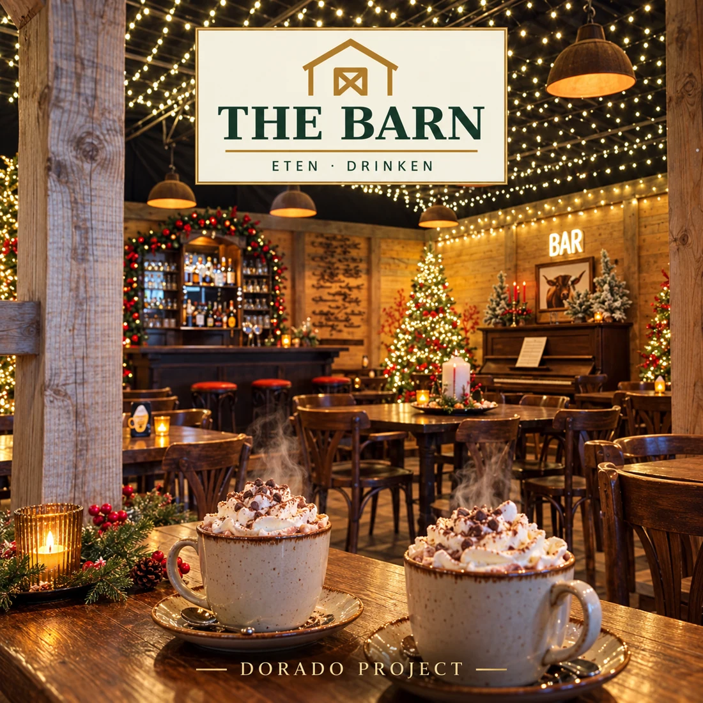

← All releases

SINGLE · ON SPOTIFY
The Barn
Country / Christmas
A joyful country Christmas song inspired by The Barn at Tuindorado: driving drums, fiddle and a big singalong chorus celebrate friends, family and a warm break from the Christmas show.
Listen on Spotify →
A little Christmas, a whole lot of heart
Step inside The Barn, the country Christmas café at Tuindorado in Drachten. Beneath wooden beams and twinkling lights, friends and family come together for hot chocolate with whipped cream, Apfelstrudel, cinnamon rolls and a Broodje Unox. This upbeat English-language song turns that welcoming Christmas feeling into country music, with punchy drums, honky-tonk piano and a chorus to sing together. The cover is inspired by photographs of the real café.
More from Dorado Project
From synthpop to rock: explore more tracks and the story behind Dorado Project.
Explore all tracks →